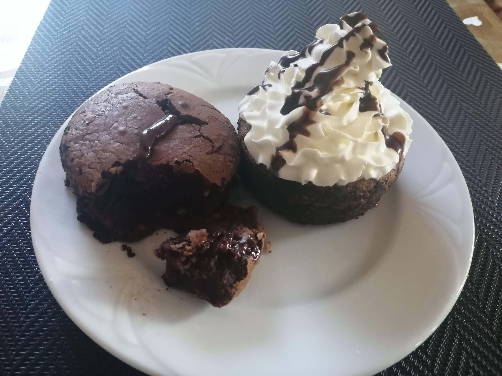

Csokoládés lávasüti

Elkészítési idő: 37 perc
Elkészítés
A csokoládét és a vajat összeolvasztjuk. A 4 tojássárgát a cukorral sűrű habbá verjük. A 2 tojásfehérjét csipet sóval kemény habbá verjük, majd összeforgatjuk a tojássárgás masszával.
Hozzáadjuk a lisztet, végül a vajas olvasztott csokoládét is. Négy szufléformát kikenünk vajjal és kakaóval, beleadagoljuk a masszát.
Legalább fél órára hűtőszekrénybe tesszük!
200 fokra melegített sütőben 12 perc alatt megsütjük. Ezután érdemes 1-2 percet várni, hogy ne égessük meg magunkat.
Fogyaszthatjuk egyenesen a szufléformából, de tetszés szerint késsel körbevághatjuk, majd kistányérra boríthatjuk a süteményt.
Biztonságos?
Próbálja meg szerencséjét!!!
Recept keresés